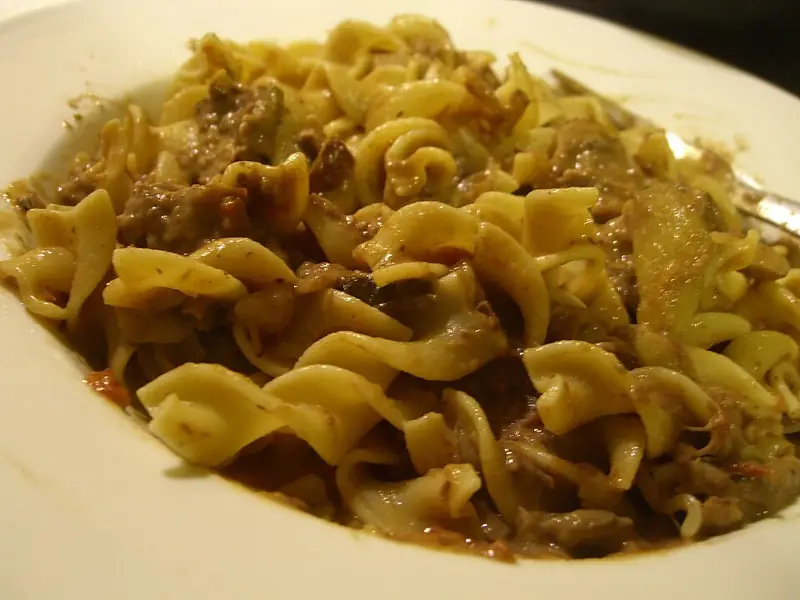

Фото: benketaro, CC BY 2.0

Бефстроганов
Тонкие полоски говядины в сметанном соусе с луком
60 мин4 порц.487 ккал на порциюБ 31 · Ж 36 · У 10Русская кухня
Продукты на 4 порц.
- Говядина600 г
- Лук репчатый2 шт
- Сметана 20%8 ст. л.
- Мука пшеничная1 ст. л.
- Томатная паста по желанию1 ст. л.
- Вода0,75 стак.
- Растительное масло2 ст. л.
- Соль1,5 ч. л.
- Перец чёрный молотый2 щеп.
Как готовить
- Говядину нарежьте поперёк волокон пластинами 1 см, слегка отбейте и нарежьте брусочками толщиной с палец.
- Лук нарежьте полукольцами и обжарьте на половине масла на среднем огне 7 минут до золотистого цвета. Переложите в тарелку.
- Мясо обваляйте в муке. На оставшемся масле обжарьте на сильном огне небольшими порциями по 2-3 минуты до корочки.
- Верните лук и всё мясо в сковороду. Добавьте сметану, воду и томатную пасту, если используете, перемешайте.
- Тушите под крышкой на слабом огне 25-30 минут, пока мясо не станет мягким.
- Посолите и поперчите в конце. Соус должен быть густым и гладким.
Совет. Жарьте мясо порциями, чтобы оно оставалось в один слой. Если выложить всё сразу, говядина пустит сок и будет вариться, а не жариться.